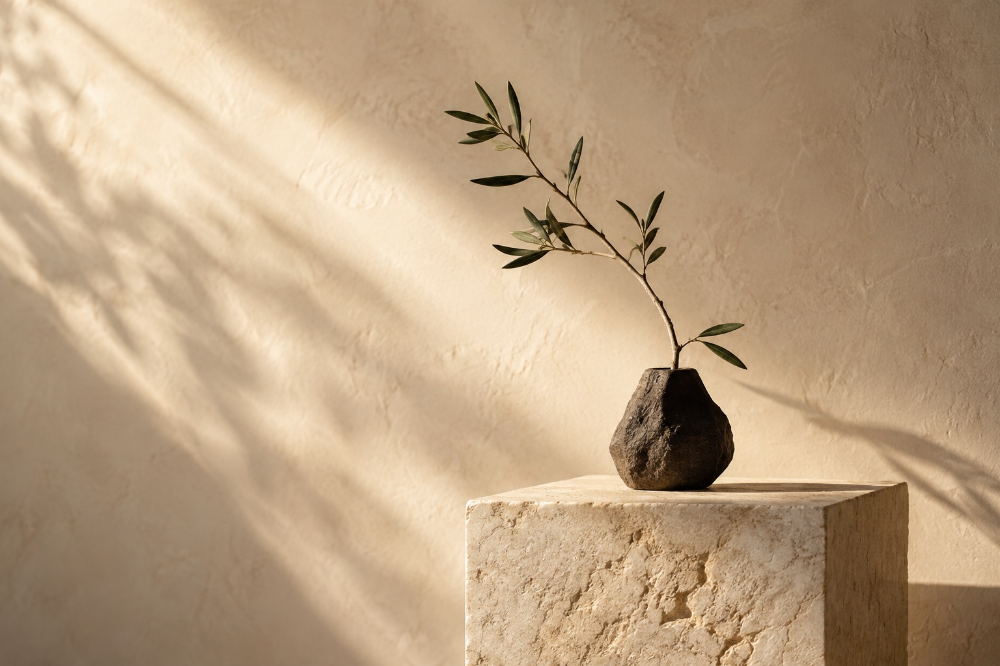

월급루팡
시간에 작은 재미를잠깐 쉬어도, 월급은 흐르니까.
쉬는 동안 쌓이는 월급을 눈으로 확인하는 작은 즐거움.
A DIGITAL PRODUCT STUDIO
작은 아이디어를, 일상의 쓸모로.
우리는 더 나은 하루를 만드는 서비스를 가꿉니다.

평범한 하루에 더하는, 조금의 즐거움과 편리함.
잠깐 쉬어도, 월급은 흐르니까.
쉬는 동안 쌓이는 월급을 눈으로 확인하는 작은 즐거움.
오늘 뭐 입지, 우산은 챙길까?
숫자보다 직관적으로, 캐릭터로 만나는 오늘의 날씨와 옷차림.
THE WAY WE GROW
좋은 서비스는 거창한 아이디어보다
매일 마주치는 작은 질문에서 시작한다고 믿습니다.
디지털 파머는 그 질문을 발견하고, 직접 만들고,
사용자의 일상 속에서 더 나은 답으로 키워갑니다.
무심코 지나쳤던 불편함과
작은 즐거움에 귀를 기울입니다.
아이디어를 직접 써볼 수 있는
경험으로 빠르게 옮깁니다.
실제로 쓰는 사람들의 목소리로
조금씩 더 쓸모 있게 만듭니다.
다음 아이디어의 시작